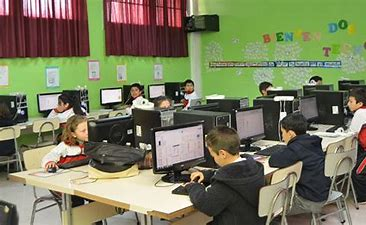
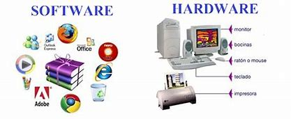

Elementos de un cistema de información computacional
Equipo computacional:
hardware necesario para que el cistema de información funcione, integrado por computadoras y equipo periferico conectado a ellas
Recurso Humano:
Son la personas que interactuan
con el sistema de información,suministran datos o utilizan
el sistema para generar datos.
Fuente:
son los datos e información que se introducen en el sistema, es decir son las entradas requeridas para que el sisitema informático funcione.

Programas
Software ejecutado por la computadora, el cual procesa la información de entrada para generar los resultados esperados.
Telecomunicaciones
abarca el software y hardware que permite la transmisión en forma electrónica de texto eimágenes, entre otros.

Políticas y reglas de Operación:
aplicadas a los procedimientos y mecanismos para hacer que una aplicación de computadora tarbaje de acuerdo con estas o regir la parte funcional del proceso administrativo de la empresa.
Principal
Atras